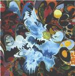

| Artist: | Discolor |
| Title: | III |
| Label: | MizMaze/Lizard MZ008/CD0021 |
| Length(s): | 72 minutes |
| Year(s) of release: | 2001 |
| Month of review: | [03/2002] |
| 1) | Psychedelic Rain | 3.52 |
| 2) | Glass Keys To Open | 8.05 |
| 3) | As Light As A Feather | 3.40 |
| 4) | When I See You | 4.57 |
| 5) | And Wonder | 12.06 |
| 6) | Garden Fair | 4.11 |
| 7) | What Remains Of Her | 9.40 |
| 8) | Sparkle Plenty | 4.36 |
| 9) | Solar Bird Fly | 7.49 |
| 10) | Sirius | 10.00 |
| 11) | El Strings | 2.43 |
The intimate vocals of As Light As A Feather are laced with sitar and rambling percussion. Again a rather monotonous track. When I See You continues the line of the above, but the music has more of a pop feel underneath it now and might be said to be more in the Porcupine Tree corner. Again there is an orientation towards the Orient, and the music has a mystic, ethereal feel. At the end we gets waves of keyboards, the song simply drifts along.
And Wonder is the longest track on the album. It opens like church music but with slow vocals. After a minute or three we get a tempo change and percussion sets in. This part feels like a ritual dance of some sort. After a more atmospheric intermezzo, the pace comes back, repetitive and hypnotizing. Again, not much variety given the length of the track.
Garden Fair is hazy and melancholic. It features bleepy keyboards, doubled vocals, acoustgic guitar and easy-going drums. What Remains Of Her is almost ten minutes and a rather nice track. It opens with a piano line, repetitively and good. At first the song is rather merry, but also mysterious and notwithstanding the slow evolving the music has again a pop feel. The vibe is that of sunny warm summersday, in pastoral way. Later the keyboards take over and the music at times refers to Vangelis. Plenty of organ in there too.
Sparkle Plenty is acoustic in the dreamy No-Man style. Solar Bird Fly opens with futuristic bird sounds. The music fits well with the music. Later a lonely piano sets in and the low cello like sounds make for a melancholy atmosphere.
On Sirius I was reminded very much of Gandalf's More Than Just A Seagull, and hence it is a bit New Agey. El Strings is the closer and the odd one out: it has something waltzing and classical, a good melody and might remind one of Enya.